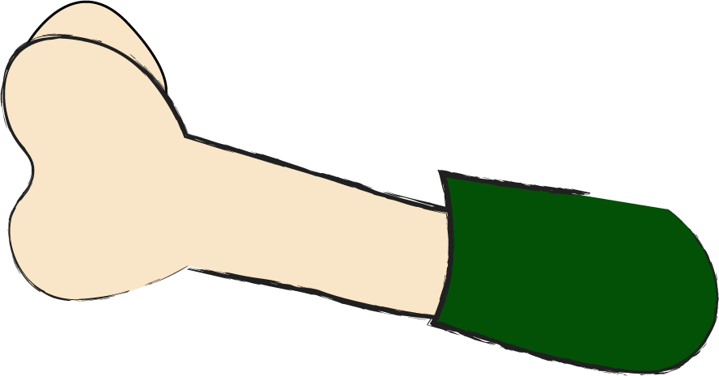

Projet créé dans le cadre du cours Optimisation Web - Intégration multimédia - Collège Montmorency. © 2023 - Conception : Pierre-Luc Proulx et Antoine Dion| Développement Web : Pierre-Luc Proulx
Julia et Marie, les 2 meilleures amies, sont invitées à séjourner dans une auberge en Floride.
Sans se soucier de l’ambiance, les filles sonnaient à la porte, mais personne ne répondait. Elles entrèrent dans l’auberge...

Dans l’auberge, aucun signe d’un réceptionniste. Les filles se dirigeaient vers leurs chambres.
Julia entendit un bruit venant du couloir. Elle se dirigea vers la source...
Jusqu’à ce qu’elle se fasse prendre par surprise
...
Fin...?